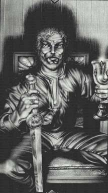

БлейзЯрко рыжие волосы, синие глаза бородатый, небольшой подбородок. Пламенный, под стать цвету волос, Блейз больше всех членов семьи любил веселье. Но факел его веселья был далек от ясности и чистоты, так, как его ум интригана измышлял препятствие за препятствием для любого члена семьи, кто наиболее серьезно относился к делам власти. Больше всего в своей жизни он презирал серьезность, и все же, когда Эрикпротянул к трону руки, Блейз разительно изменился. В этот момент он стремился спасти Янтарь, наверное, представив себя королем, как вдруг его миссия стала невероятно серьезной. Конечно, он потерпел неудачу и погиб, сражаясь на стороне Корвина, но Рэндом не позволил его попыткам исчезнуть в забвении. |
 |